Section 5.4: Two-Way Tables and Conditional Probability
Learning Objectives
1.Find and interpret conditional probability from two-way tables.
2.Find and interpret relative risk.
This section is a “mashup” of sections 5.2 and 5.3. We will focus on using two-way tables to find conditional probability. We will also verify that the two methods we have seen to compute , one from section 5.2 and the other using the multiplication rule in 5.3, are equivalent.
Conditional Probability from Two-way Tables
Recall the definition of conditional probability from section 5.3. When we compute a conditional probability, we are restricting the sample space.
Definition 1
The probability that event F will happen assuming event E has already happened is denoted
When we have a two-way table and we wish to compute the conditional probability , we shrink our view to the row or column containing the data where event E happens. Then, we use the total number of ways E happens as the denominator, and the number of ways where E and F both happen as the numerator.
 Tip!
Tip!In the next examples, you will see the row or column for the “given condition” highlighted. Keep in mind that the given condition total is the denominator for the conditional probability! When we assume a condition, we are restricting the original sample space to the portion where that condition is satisfied.
Example 1: Conditional Probability in a Statistics Class
In a survey of 40 students enrolled in a statistics course, a professor finds that she has 18 students also taking an English class. At the midterm, she decides to see if there is a connection with taking English and the student grade in the Statistics course. Table 11 contains the data.
a)Find the probability that a student is earning an A, given they are taking English.
b)Find the probability that a student is earning an A, given they are not taking English.
c)Find the probability that a student is earning an A or B assuming they are taking English.
d)Find the probability that a student is taking English, given they are earning an A.
Photo by Mimi Thian (opens in a new tab) on Unsplash (opens in a new tab)
Table 11: Two-Way table for Taking English and Grade in Statistics | ||||
|---|---|---|---|---|
A | B | C | Total | |
Taking English | 8 | 6 | 4 | 18 |
Not Taking English | 8 | 7 | 7 | 22 |
Total | 16 | 13 | 11 | 40 |
Solution:a)We want to find Since we are assuming that the student is taking English, we restrict the table to the row of students taking English, highlighted in red in figure 5.28. There are 18 of these students, and 8 of them are earning an A. So, the probability of earning an A, given a student is taking English, is .
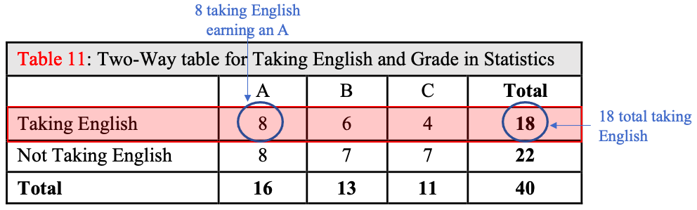
Figure 5.28: The given condition of “Taking English” is highlighted.
b)Here we wish to find The row for students not taking English is highlighted in figure 5.29. There are 22 students that are not taking English, with 8 of these students earning an A. So, .
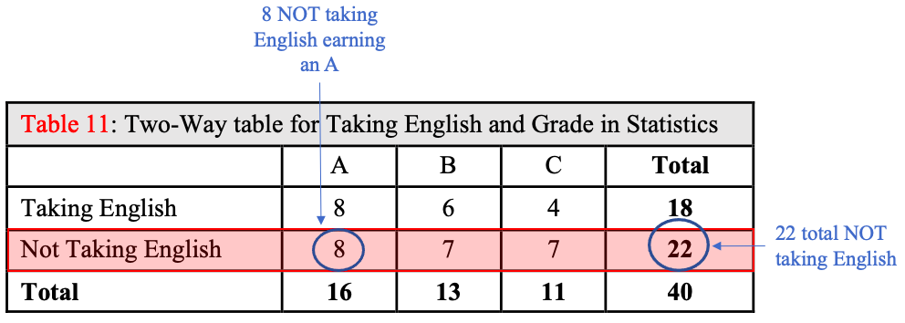
Figure 5.29: The given condition of “Not Taking English” is highlighted.
c)Here we are looking for There are 18 students taking English, and 8 are earning an A while 6 are earning a B. We will add these together using the addition rule for disjoint events to get .
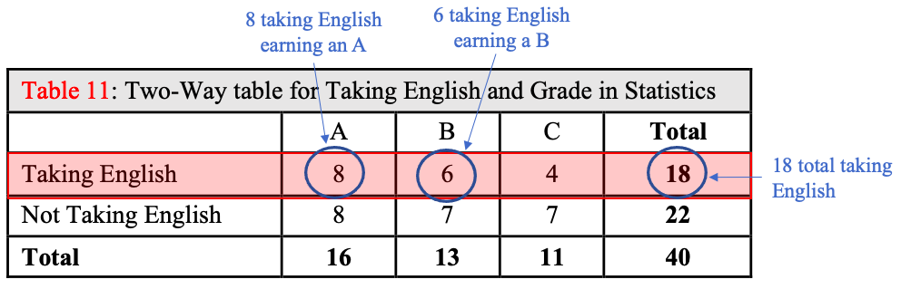
Figure 5.30: The given condition of “Taking English” is highlighted.
d)We want to find Here we are assuming the student is earning an A, so we restrict the table to the column of students who are earning an A, shown in figure 5.31. Of the 16 students earning an A, 8 of them are taking English. So,
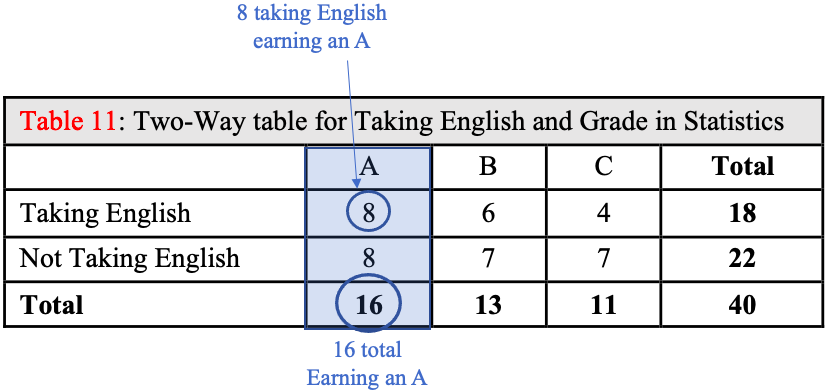
Figure 5.31: The given condition of “Earning an A” is highlighted.
The difference between parts (a) and (d) can be confusing. The probability of earning an A given a student is taking English sounds very similar to the probability of taking English given the student is earning an A. Be very careful to identify what is assumed in the statement, then focus on that assumption’s row or column. It is always the total of the assumption’s row or column that goes into the denominator of the conditional probability.
Finally, what does the professor conclude? Is there a connection between student grade and taking English? One way to use probability to answer the question is as follows: The probability of earning an A if you are taking English 0.4444. The probability of earning an A if you are not taking English is 0.3636. So, it appears you are more likely to be earning an A if you are also taking English. Similarly, the probability of earning a C is less likely if you are taking English and more likely if you are not taking English. So, taking English may improve your chances of earning a higher grade in Statistics. In unit 3 we will study how to determine when two variables such as these are connected.
Example 2: Conditional Probability
The 2019 Pew Research Survey on Race in America asked respondents to state how race or ethnicity should be used in the college admissions process. The results are summarized in Table 8 from section 5.2. Find the probability that a randomly selected participant
a)Feels race/ethnicity should be a Major factor, given they are White.
b)Feels race/ethnicity should be a Major factor, given they are Black
c)Feels race/ethnicity should not be a factor, assuming they are White.
d)Feels race/ethnicity should not be a factor, assuming they are non-White.
e)How much more likely is a non-White individual to feel that race/ethnicity should be a Major factor than a White individual?
Table 8: How should race or ethnicity be considered in college admissions? | |||||
|---|---|---|---|---|---|
White | Black | Hispanic | Asian | Total | |
Major Factor | 120 | 273 | 173 | 43 | 609 |
Minor Factor | 539 | 304 | 346 | 96 | 1285 |
Not a Factor | 2338 | 941 | 1055 | 193 | 4527 |
Total | 2997 | 1518 | 1574 | 332 | 6421 |
Solution:a)We want to find , so we highlight the column for White participants, shown in figure 5.32. The total number of White participants is 2997, and there are 120 of these who think race or ethnicity should be a Major Factor in determining college admissions. So, .
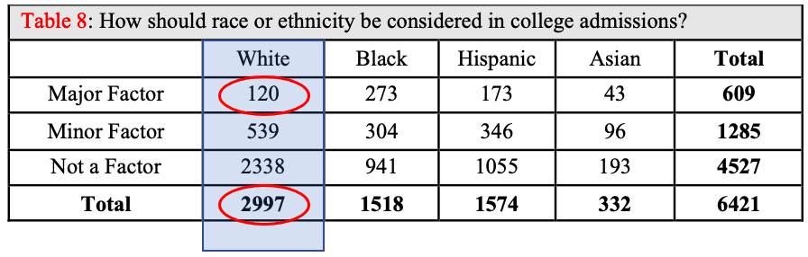
Figure 5.32: The given condition of “White” is highlighted.
b)Here we want to find , so we highlight the column for Black participants, shown in figure 5.33. The total number of Black participants is 1518, and there are 273 of these who think race or ethnicity should be a Major Factor in determining college admissions. So, .
.
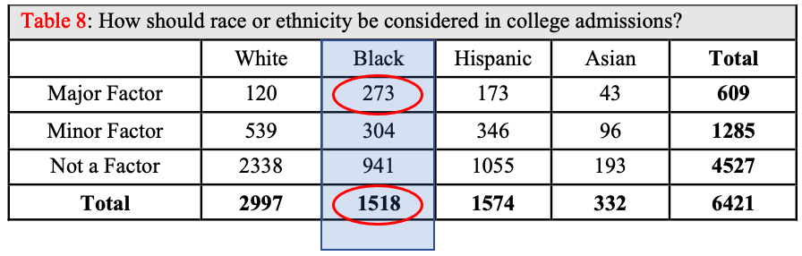
Figure 5.33: The given condition of “Black” is highlighted.
c)We want to find , so we highlight the column for White participants, shown in figure 5.34. The total number of White participants is 2997, and there are 2338 of these who think race or ethnicity should not be a factor in determining college admissions. So, .
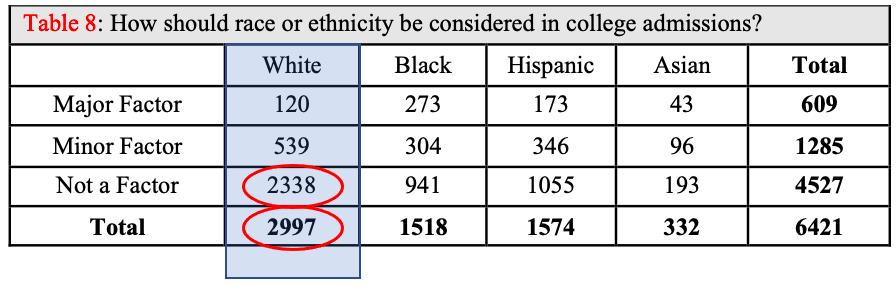
Figure 5.34: The given condition of “White” is highlighted.
d)We want to find , so we highlight the columns for non-White participants, which includes all the columns except the column for White, shown in figure 5.35. The total number of non-White participants is 3424, and there are 2189 of these who think race or ethnicity should not be a factor in determining college admissions. So, .
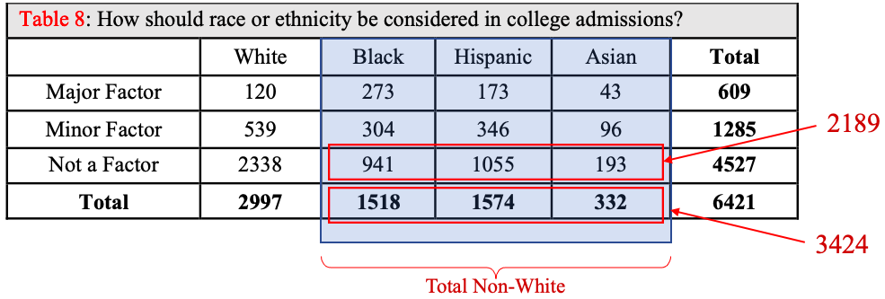
Figure 5.35: The given condition of “non-White” including Black, Hispanic, and Asian is highlighted.
e)To answer this question, we need to compare the probability of thinking race ethnicity should be a Major factor when individuals are White versus when they are non-White. We already found Next, we find . We have once again grouped together all the non-White columns, shown in figure 5.36. The total number of non-White individuals who think race or ethnicity should be a Major factor in college admissions is 489. So,
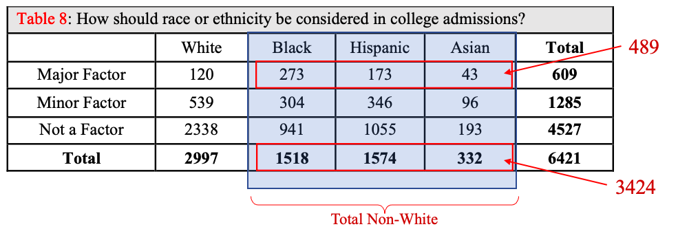
Figure 5.36: The given condition of “non-White” including Black, Hispanic, and Asian is highlighted.
So, 14.28% of non-White individuals think that race or ethnicity should be a Major factor in college admissions. On the other hand, only 4.0% of White individuals think that race or ethnicity should be a Major factor. If we divide the conditional probabilities,
This tells us that a non-White person is about 3.6 times more likely to think race or ethnicity should be a Major factor in college admissions than a White person.
Part (e) of the last example is an example of computing relative risk. In this case, what is the “risk” of believing race or ethnicity should be a Major factor in college admissions if you are non-White versus White? We found you are 3.6 times more likely if you are non-White than if you are White. The term “risk” comes from examples in which we compare the risk factors (such as race or job type) for things like heart attacks, lung disease, mental health issues, etc.
Definition 2
The relative risk of A given B or C is the number
We interpret this as the number of times A is more likely given condition B than it is with condition C.
Example 3: Seat Belts and Fatal Car Accidents
The National Highway Traffic Safety Administration and the National Center for Statistics and Analysis published a report in October 2018 with the data found in Table 12. You can read the NHTSA report on seat belt use and fatalities (opens in a new tab). It summarizes the traffic accidents on highways involving passenger vehicle occupants. Each accident was fatal or non-fatal, and each occupant used a seatbelt restraint or did not.
a)Find the probability that the accident was fatal, given the occupant used a seatbelt restraint.
b)Find the probability that the accident was fatal, given the occupant did not use a seatbelt restraint.
c)Find the relative risk of fatality given the seatbelt restraint usage.
Photo by Jared Murray (opens in a new tab) on Unsplash (opens in a new tab)
Table 12: Seatbelt use and Fatalities in Highway Accidents (2017) | |||
|---|---|---|---|
Fatal | Non-fatal | Total | |
Seatbelt Restraint Used | 11388 | 31639 | 43027 |
No Restraint Used | 10076 | 4791 | 14867 |
Total | 21464 | 36430 | 57894 |
Solution:a)Since we are given that the occupant used a seatbelt, we restrict our attention to the first row, shown in figure 5.37. There were 11388 fatalities out 43027 occupants that were using seatbelts. So, Thus about 26.5% of accidents involving occupants wearing seatbelts proved to be fatal.
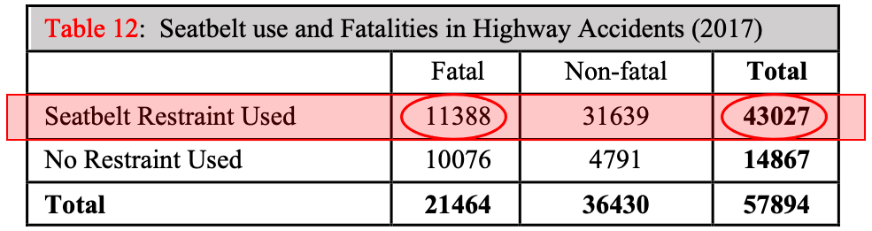
Figure 5.37: The given condition of “Seatbelt Restraint Used” is highlighted.
b)Since we are given that the occupant did not use a seatbelt restraint, we restrict our attention to the second row, shown in figure 5.38. There were 10076 fatalities out of 14867 occupants that were not using seatbelts. So, Thus about 67.8% of accidents involving occupants not wearing seatbelts were fatalities.
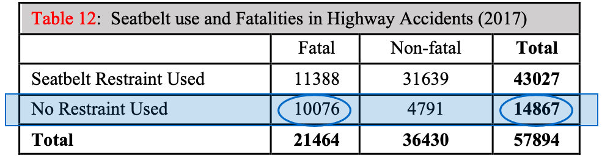
Figure 5.38: The given condition of “No Restraint Used” is highlighted.
c)Comparing the two answers, 26.5% of accidents were fatal for those wearing seatbelts, while 67.8% of accidents were fatal for those not wearing seatbelts. We can compute the ratio
This means that a person is over 2.5 times more likely to die in a highway traffic accident if they do not use a seatbelt than if they do.
Usually, when we calculate relative risk, we use the larger probability in the numerator so that the risk is a number that is larger than 1. That way, we can phrase the conclusion in the form “You are (some number greater than 1) times more likely to ... if you ... than if you ....”
Probability Statements Involving “AND”
We have seen the word “AND” appear to be used in two different ways in section 5.2 and section 5.3. Because of that, interpreting the word “AND” may seem a little tricky. In section 5.2, we wrote and we counted the number of times both E and F simultaneously occurred in the data, then divided by the total. When we used “AND” in section 5.3, we used the multiplication rule, . It turns out that these are the same. Example 4 will show how the two interpretations are equivalent.
Example 4: Conditional Probability in a Statistics Class
In a survey of 40 students enrolled in a statistics course, a professor finds that she has 18 students also taking an English class. At the midterm, she decides to see if there is a connection with taking English and the student grade in the Statistics course. Table 11 contains the data. Assume that a student is randomly selected from the class.
a)Find directly using data from the table.
b)Find using the multiplication rule.
c)Verify that the results are the same.
Table 11: Two-Way table for Taking English and Grade in Statistics | ||||
|---|---|---|---|---|
A | B | C | Total | |
Taking English | 8 | 6 | 4 | 18 |
Not Taking English | 8 | 7 | 7 | 22 |
Total | 16 | 13 | 11 | 40 |
Solution:a)There are 8 students out of 40 that are earning an A AND taking English, so . The 8 students can be seen as the overlap of the Taking English Row and the Earning an A column, shown in figure 5.39.
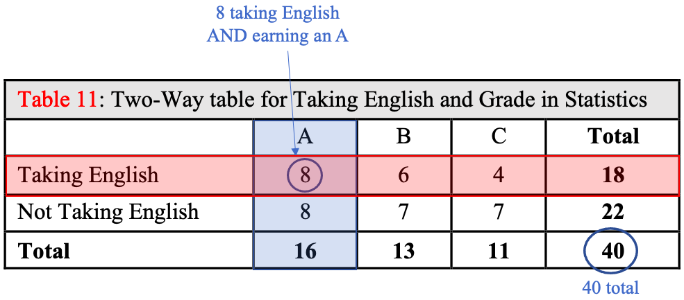
Figure 5.39: The intersection of the Taking English row and the Earning an A column.
b)To use the multiplication rule, we must find
The probability of earning an A is the number earning an A, divided by the total. So, .
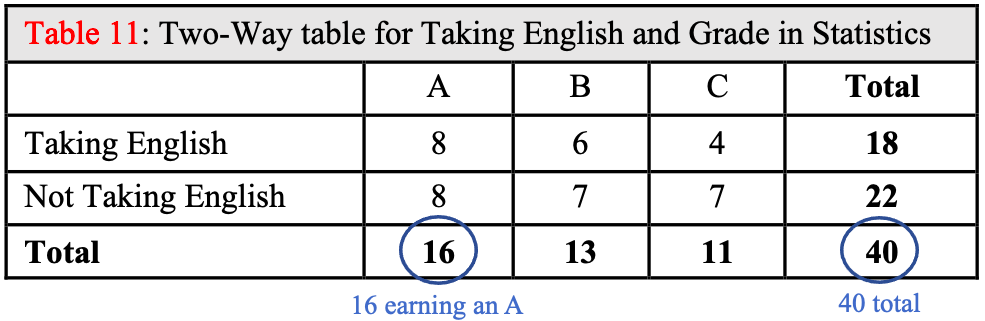
Figure 5.40: The probability of earning an A.
The conditional probability of is found by restricting the sample space to the column containing the A grades.
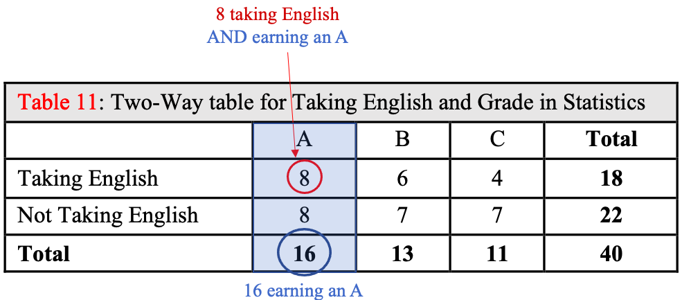
Figure 5.41: The probability of earning an A given the student is Taking English.
So,
Putting the parts together,
c)The answers to both (a) and (b) are the same, . However, if you have a two-way table, it is much easier to use the data in its organized form to find the probability than it is to use the multiplication rule. The use of the multiplication rule in this example is only to assure the reader that the word “AND” is not being used in different ways.
Photo by Zachary Nelson (opens in a new tab) on Unsplash (opens in a new tab)
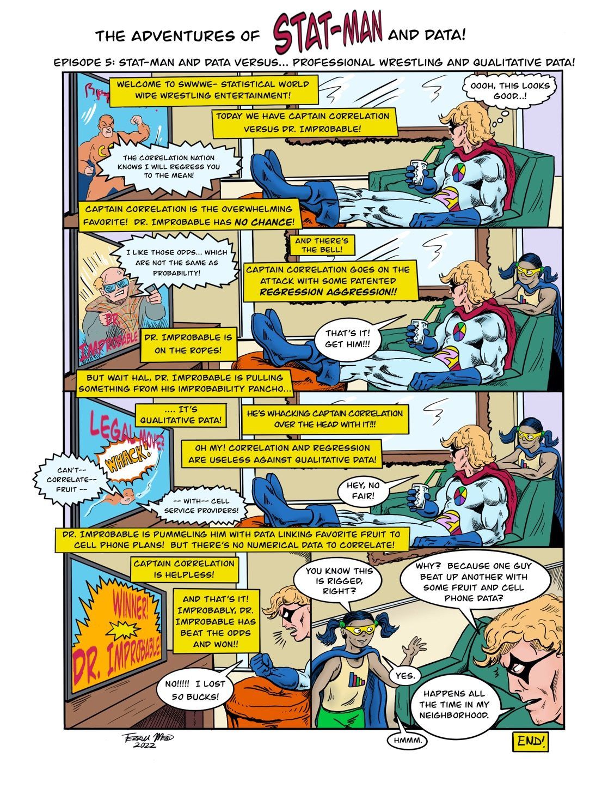
Text version of the comic
The Adventures of Stat-Man and Data! Episode 5: Stat-Man and Data versus… Professional Wrestling and Qualitative Data!
Stat-Man relaxes in an armchair with his feet up and a drink in his hand, watching wrestling on TV.
Announcer: Welcome to SWWWE- Statistical World Wide Wrestling Entertainment!
Announcer: Today we have Captain Correlation versus Dr. Improbable!
Stat-Man (thinking): Oooh, this looks good…!
On the TV, Captain Correlation flexes in an orange costume with a big C.
Captain Correlation: The Correlation Nation knows I will regress you to the mean!
Announcer: Captain Correlation is the overwhelming favorite! Dr. Improbable has NO CHANCE!
On the TV, Dr. Improbable, a bald man in sunglasses and a net poncho, scowls.
Dr. Improbable: I like those odds… which are not the same as probability!
Announcer: And there’s the bell!
Announcer: Captain Correlation goes on the attack with some patented REGRESSION AGGRESSION!!
Data walks up behind Stat-Man’s chair.
Announcer: Dr. Improbable is on the ropes!
Stat-Man: That’s it! Get him!!!
Announcer: But wait Hal, Dr. Improbable is pulling something from his Improbability Pancho…
Announcer: …. It’s qualitative data!
Announcer: He’s whacking Captain Correlation over the head with it!!!
Sound effect on the TV: WHACK! Legal move?
Announcer: Oh my! Correlation and regression are useless against qualitative data!
Captain Correlation, flying through the air: Can’t-- correlate-- fruit -- -- with-- cell service providers!
Stat-Man: Hey, no fair!
Announcer: Dr. Improbable is pummeling him with data linking favorite fruit to cell phone plans! But there’s no numerical data to correlate!
Announcer: Captain Correlation is helpless!
The TV screen flashes: Winner! Dr. Improbable!
Announcer: And that’s it! Improbably, Dr. Improbable has beat the odds and won!!
Stat-Man, shaking his fist: No!!!!! I lost 50 bucks!
Data: You know this is rigged, right?
Stat-Man: Why? Because one guy beat up another with some fruit and cell phone data?
Data: Yes.
Stat-Man: Happens all the time in my neighborhood.
Data: Hmmm.
End!
Signed Terrill Mead 2022.